Metric til macOS
Et værktøjssæt til timing og frekvens i et vindue til macOS med indbygget metronom. Det regner delaytider ud fra et tempo, beregner FM-forhold og sidebånd, synkroniserer en LFO med takten og transponerer et sample, i et vindue med variabel størrelse, som du kan have åbent ved siden af din DAW. Siri, Genveje og en widget i Meddelelsescenter understøttes.
- Metronom med tap-tempo og visuel taktindikator
- BPM → ms / Hz-omregner (rene, punkterede og triolværdier)
- Tone ↔ frekvens-tabel (108 toner, A4 = 440 Hz)
- Transponér og hastighed, FM-beregner, LFO-rater, 32 overtoner
- Tap-tempo i menulinjen, delaytider i ms eller Hz samt metronom og toner
- Siri, Genveje og en BPM-widget i Meddelelsescenter
Skærmbilleder
Med lyse og mørke skærmbilleder, der følger webstedets tema.

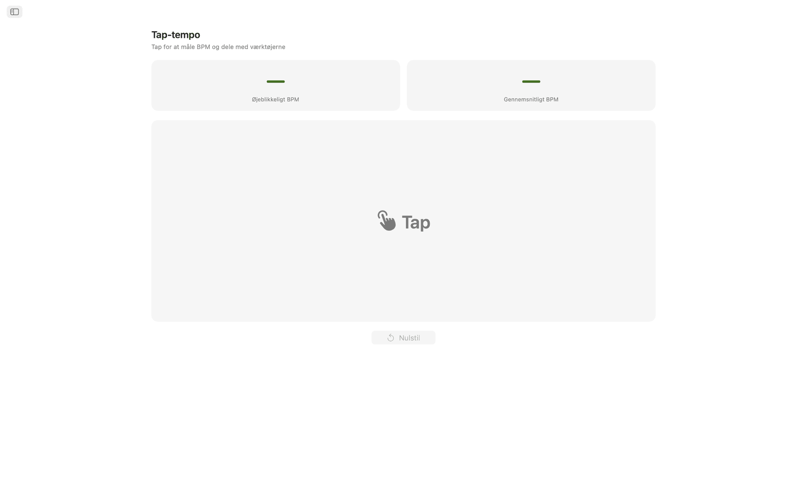
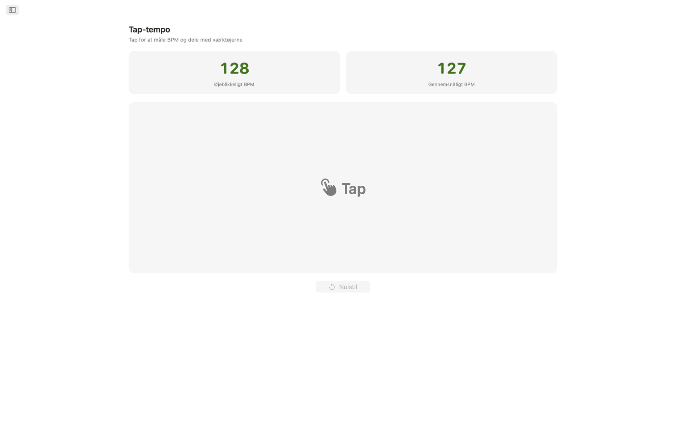
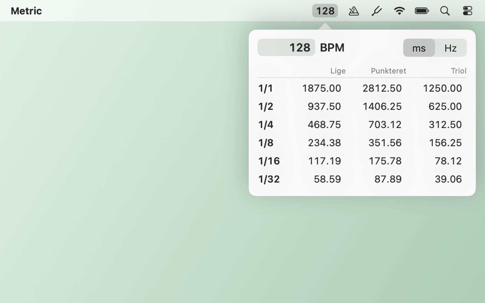
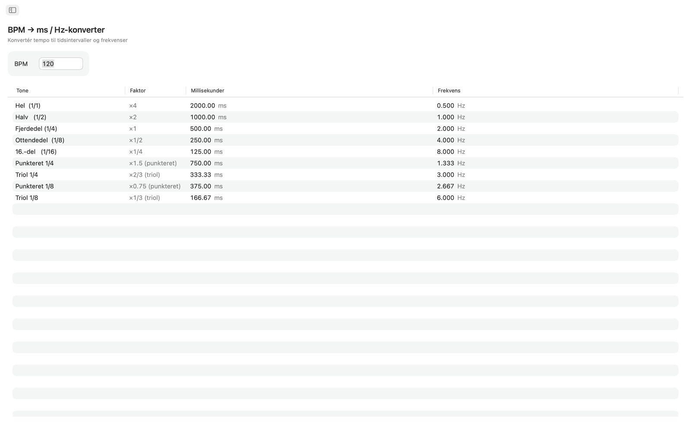
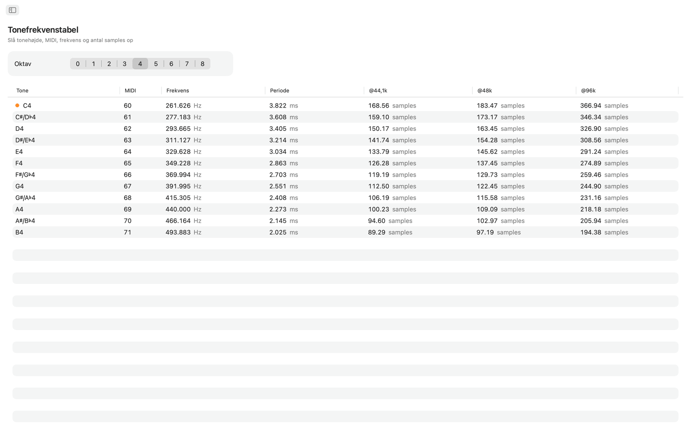
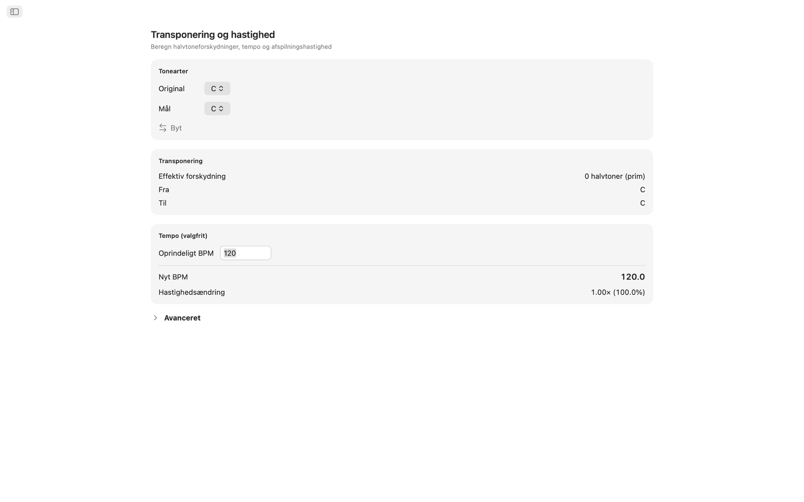
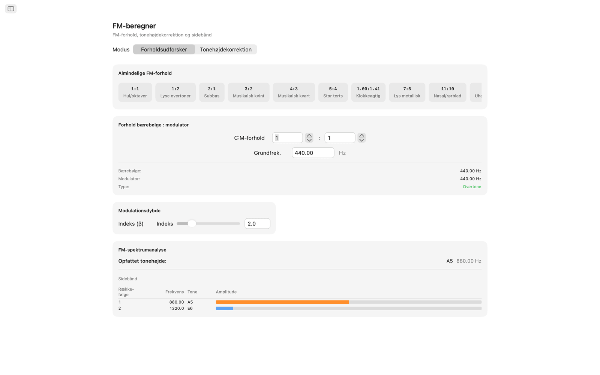
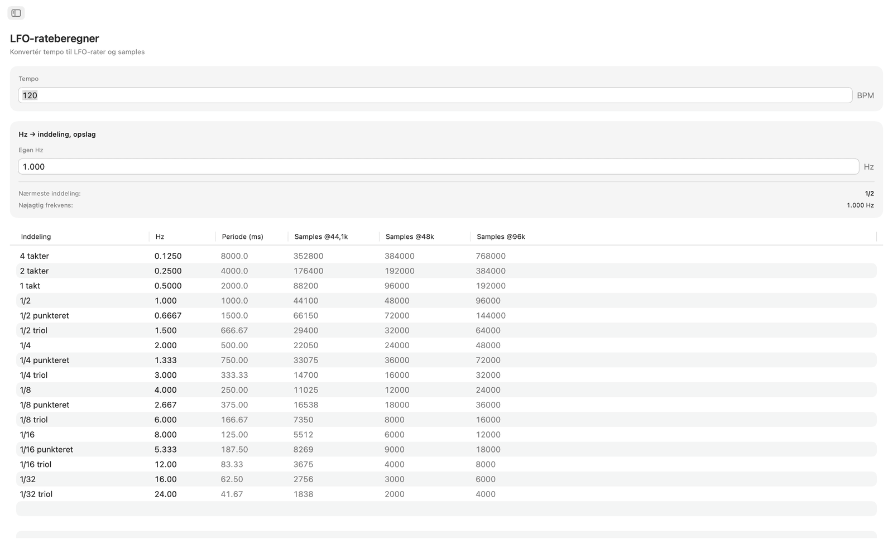
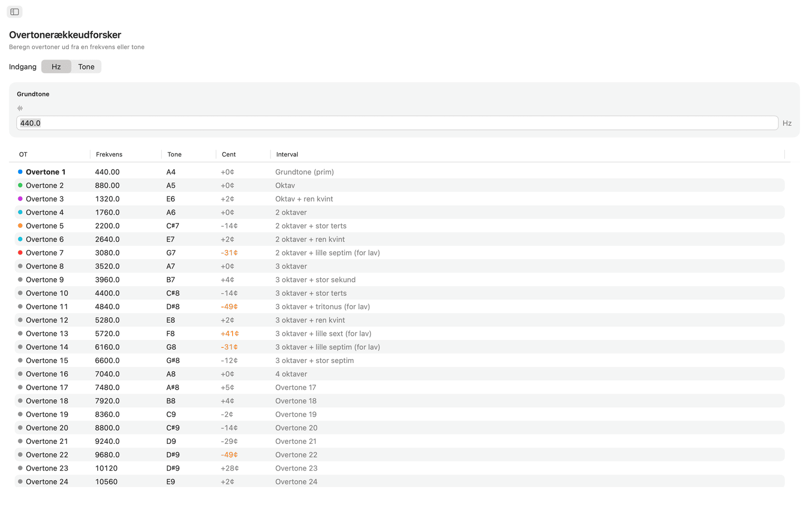

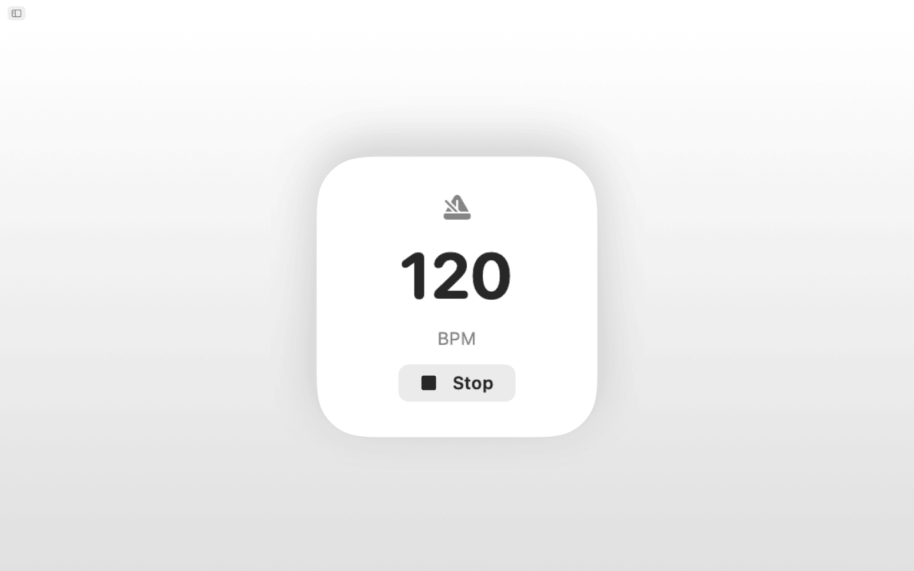
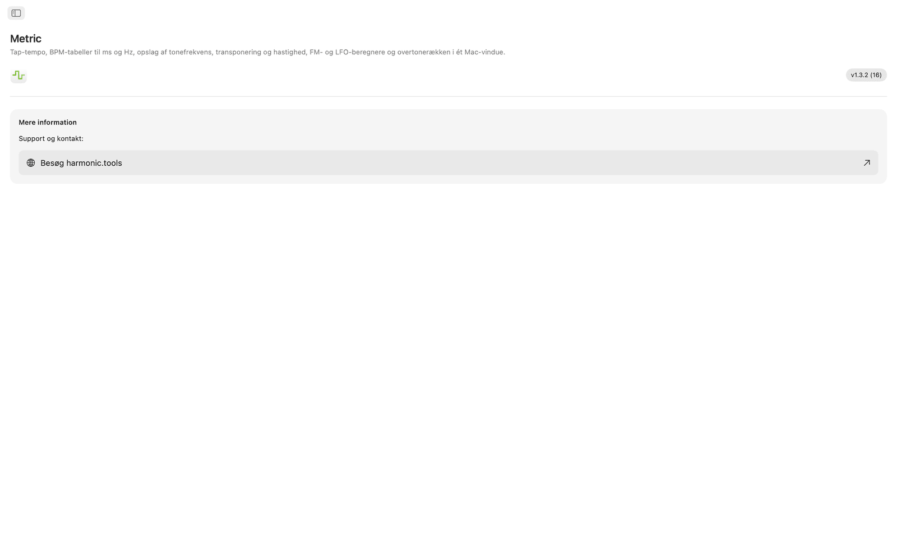
Funktioner
- Metronomet har et tempohjul, tap-tempo, taktarter, underdelinger og en visuel taktindikator.
- Klik på det store tapfelt for at måle tempoet. Metric viser BPM fra dit seneste tap og et glidende gennemsnit over op til otte tap, og begge værdier kan sendes direkte til BPM-omregner, Transponér eller LFO-rate med ét klik.
- BPM → ms / Hz-omregneren tager et tempo og giver rene, punkterede og triolværdier for hele, halve, fjerdedels, ottendedels og sekstendedelsnoder. Hver række viser millisekunder og frekvens i Hz, så du kan indstille delay, reverbens pre-delay eller sidechain-timing uden en lommeregner.
- Tonefrekvenstabellen viser alle 108 kromatiske toner fra C0 til B8. Hver tone viser sit MIDI-nummer, sin frekvens i Hz, sin periode i millisekunder og antal samples ved 44,1 kHz, 48 kHz og 96 kHz. Det midterste C er markeret. Bygger på A4 = 440 Hz.
- Til transponering vælger du en oprindelig toneart og en måltoneart for at se halvtonetrinnet, intervalnavnet og den præcise transponeringsværdi i din DAW. Tilføj et oprindeligt BPM, så beregner Metric det nye tempo og forholdet for afspilningshastighed. En centskyder (±100) og en hastighedsskyder over to oktaver (±24 halvtoner) giver mulighed for finjustering.
- FM-beregneren har to tilstande. Forholdsudforsker sætter forholdet mellem bærebølge og modulator ud fra en grundfrekvens og tilbyder ti FM-forudindstillinger, fra hule oktaver (1:1) til uharmoniske klokker (1:π). Tonehøjdekorrektion virker omvendt: vælg en måltone, og få de præcise frekvenser for bærebølge og modulator. Begge tilstande viser en sidebåndstabel med op til ti partialtoner, deres frekvenser, nærmeste toner og farvekodede amplituder styret af en skyder for modulationsindeks.
- LFO-rateberegneren omregner ethvert BPM til LFO-rater over 17 musikalske underdelinger, fra fire takter ned til 1/32-trioler. Hver række viser Hz, periode i millisekunder og samples pr. periode ved 44,1 kHz, 48 kHz og 96 kHz. Med omvendt opslag kan du indtaste en vilkårlig Hz-værdi og finde den nærmeste musikalske underdeling, med afvigelsen vist.
- Udforskeren af overtonerækken starter fra en frekvens eller en vilkårlig tone og viser de første 32 overtoner med frekvens, nærmeste tonenavn, afvigelse i cent og intervalbetegnelse. Overtoner af lav orden er farvekodede, og afvigelser på over 30 cent er fremhævet, så uharmonisk indhold er let at få øje på.
Fælles tempo og tonehøjde
Tap et tempo én gang, og BPM-omregner, Transponér og LFO-rate bruger alle det samme levende BPM. Tonefrekvens, FM-beregner og Overtoner bruger alle A4 = 440 Hz.
Siri, Genveje og widget
Bed Siri om at starte eller stoppe metronomen, indstille et BPM, tappe et tempo, omregne BPM til ms, finde en tonefrekvens eller transponere et tempo. Hvert værktøj er også en handling i Genveje, og BPM-widgetten holder dit tempo klar i Meddelelsescenter.
Værktøjer i menulinjen
Tap et tempo fra menulinjen uden at åbne appen. Højreklik for delaytider i ms eller Hz, og skriv et vilkårligt tempo. Punkterne for metronom og tonehøjder er valgfrie, og der er indstillinger for tilstand kun med menulinje og åbning ved login.
På skrivebordet
- Kører helt offline. Ingen konto, ingen reklamer, ingen sporing
- Native macOS-app med navigation i indholdsoversigt
- Brugerflade, der følger systemets udseende, også mørk tilstand
- Antal samples ved 44,1 kHz, 48 kHz og 96 kHz
- Vindue med variabel størrelse. Hav det åbent ved siden af din DAW
Tilgængelighed
Fungerer med VoiceOver og Stemmestyring og kan bruges fra tastaturet med piletasterne og mellemrumstasten.
Metric er gratis at prøve i 7 dage. Efter prøveperioden er fuld adgang et engangskøb uden abonnement.